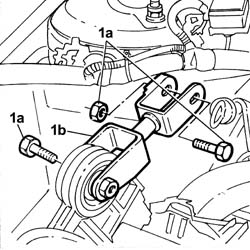
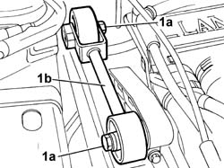
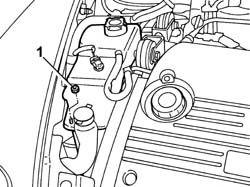
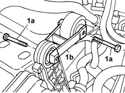

1008C10 Power unit REACTION ROD - Replace
- Path
- Procedures > 10 ENGINE > 1008 POWER UNIT SUPPORTS > 1008C power unit reaction elements > 1008C10 Power unit REACTION ROD - Replace
- Kind
- repair procedure (removal / refitting; the operation number is the code)
- Applies to
- engines: 2.0 TB, 2.4 20V, 3.0 V6, 3.2 V6; all production periods
- Interactive page
- https://sloeber94.github.io/elrnDB-lThss/en/#/90136
Applies to: engines: 2.4 20V; all production periods
 Removing
Removing
 Refitting
RefittingSee in Op. 7040D50 ENGINE COMPARTMENT UPPER SOUND INSULATION SHIELD - R.R.
1. Undo the nut fixing the expansion tank to the support; slightly raise the tank without disconnecting the pipes connected to it to allow the subsequent removal of the bolt fixing the reaction rod.

Applies to: engines: 2.4 20V; all production periods
1. Undo the bolts (1a) and remove the power unit reaction rod (1b).

Applies to: engines: 2.4 20V; all production periods
Refitting
Removing- Fit the power unit reaction rod and secure it using the bolts.
 | Value - daNm | Fastening | Component | Ø |
|---|---|---|---|---|
. | (to bracket on bodyshell) 5 | Bolt | POWER UNIT REACTION ROD | M10 X 1.25 |
| Value - daNm | Fastening | Component | Ø |
|---|---|---|---|---|
. | (to engine support) 5 | Bolt | POWER UNIT REACTION ROD | M10 X 1.25 |
- Reposition the expansion tank and secure it to the mounting bracket using the nut.
See in Op. 7040D50 ENGINE COMPARTMENT UPPER SOUND INSULATION SHIELD - R.R.
Applies to: engines: 3.0 V6, 3.2 V6; all production periods
Removing
Refitting- Open the boot, remove the cover on the left hand side and disconnect the negative battery lead.
See in Op. 7040D50 ENGINE COMPARTMENT UPPER SOUND INSULATION SHIELD - R.R.
See in Op. 1088B10 Engine coolant SUPPLY RESERVOIR - R.R.
1. Undo the bolts (1a) and remove the power unit reaction rod (1b).

Applies to: engines: 3.0 V6, 3.2 V6; all production periods
Refitting
Removing- Fit the power unit reaction rod and secure it using the bolts.
| Value - daNm | Fastening | Component | Ø |
|---|---|---|---|---|
. | (to bracket on bodyshell) 5 | Bolt | POWER UNIT REACTION ROD | M10 X 1.25 |
| Value - daNm | Fastening | Component | Ø |
|---|---|---|---|---|
. | (to engine support) 5 | Bolt | POWER UNIT REACTION ROD | M10 X 1.25 |
See in Op. 1088B10 Engine coolant SUPPLY RESERVOIR - R.R.
See in Op. 7040D50 ENGINE COMPARTMENT UPPER SOUND INSULATION SHIELD - R.R.
- Connect the negative battery lead, then close the boot.
See in Op. 0010T21 ENGINE COOLANT - Check density and top up if necessary
-
Applies to: engines: 2.0 TB; all production periods
Removing
RefittingSee in Op. 7040D50 ENGINE COMPARTMENT UPPER SOUND INSULATION SHIELD - R.R.
1. Undo the nut fixing the expansion tank to the support; slightly raise the tank without disconnecting the pipes connected to it to allow the subsequent removal of the bolt fixing the reaction rod.

Applies to: engines: 2.0 TB; all production periods
1. Undo the bolts (1a) and remove the power unit reaction rod (1b).

Applies to: engines: 2.0 TB; all production periods
Refitting
Removing- Fit the power unit reaction rod and secure it using the bolts.
| Value - daNm | Fastening | Component | Ø |
|---|---|---|---|---|
. | (to bracket on bodyshell) 5 | Bolt | POWER UNIT REACTION ROD | M10 X 1.25 |
| Value - daNm | Fastening | Component | Ø |
|---|---|---|---|---|
. | (to engine support) 5 | Bolt | POWER UNIT REACTION ROD | M10 X 1.25 |
- Reposition the expansion tank and secure it to the mounting bracket using the nut.
See in Op. 7040D50 ENGINE COMPARTMENT UPPER SOUND INSULATION SHIELD - R.R.
Topics linked from this page (3)
- 0010T21 ENGINE COOLANT - Check density and top up if necessary
- 1088B10 Engine coolant SUPPLY RESERVOIR - R.R.
- 7040D50 ENGINE COMPARTMENT UPPER SOUND INSULATION SHIELD - R.R.
Topics that link to this page (44)
- 1004B17 POWER UNIT with automatic transmission, complete with support frame, front suspension- R.R. for versions with air conditioning
- 1008A43 Power unit RIGID MOUNT - AUTOMATIC GEARBOX side - R&R
- 1008A44 RIGID REAR power unit MOUNTING - R.R.
- 1008A46 Power unit RIGID MOUNT - TIMING side - R&R
- 1008B10 FLEXIBLE MOUNTING for power unit front support (timing side) - Replace
- 1008C16 BRACKET on BODY for reaction link - R.R.
- 1016A30 Left TAPPET COVER - R.R. and Replace gasket
- 1016A36 Left and right TAPPET COVERS - R.R.
- 1016D20 LEFT CYLINDER HEAD - R.R. and replace gasket
- 1016D24 RIGHT CYLINDER HEAD - REMOVING-REFITTING AND REPLACING GASKET
- 1020A20 CRANKCASE SUMP - R.R. clean contact surfaces and apply sealant
- 1020D08 FRONT crankshaft oil seal COVER - R.R. and replace seals with timing belt(s) removed for versions with automatic transmission
- 1020D12 Crankshaft oil seal FRONT COVER - R.R. and Replace seals
- 1020D18 Front crankshaft COVER OIL SEAL - Replace
- 1020D39 Flywheel side OIL SEAL - Replace for versions with automatic transmission
- 1024B20 ENGINE FLYWHEEL - R&R for versions with automatic transmission
- 1032B10 TOOTHED timing BELT - R.R. for timing adjustment or replacement
- 1032B55 LEFT HEAD TOOTHED DRIVEN PULLIES - R.R. FOR VERSIONS WITH AIR CONDITIONING
- 1032B58 DRIVEN TOOTHED PULLIES
- 1032C32 TIMING BELT FIXED TENSIONER - R.R.
- 1032D12 Timing system protective COVER(S) - R.R.
- 1036E10 CAMSHAFTS in left cylinder head - R.R. on vehicle
- 1036E15 Right cylinder head CAMSHAFTS - R.R. on vehicle for versions with air conditioning
- 1036E54 OIL SEALS FOR LEFT CYLINDER HEAD CAMSHAFTS - REPLACE
- 1036E58 OIL SEALS FOR RIGHT CYLINDER HEAD CAMSHAFTS - REPLACE
- 1056B90 SYSTEM CABLE LOOM - R.R.
- 1072D54 ADJUSTABLE AIR DUCTS (V.I.S.) CONTROL ACTUATOR - R.R.
- 1080B39 RIGHT CATALYTIC PRECONVERTER - R.R. or Replace Gasket
- 1084B12 ENGINE OIL PUMP - R.R.
- 1084B16 ENGINE OIL PUMP - R.R. FOR VEHICLES WITH AIR CONDITIONING
- 1084B23 OIL PUMP IDLER DRIVE GEARS AND CHAIN - R.R.
- 1084C10 Engine oil heat exchanger - R.R.
- 1088C10 WATER PUMP - R.R.
- 1088D63 Alternator side flexible hose for alternator coolant return pipe - R.R.
- 1088D68 Connectors on coolant circuit alternator - R.R. or replace gasket
- 4130B38 Rubber supply PIPE from RIGID PIPE to POWER ASSISTED STEERING PUMP - R.R. Includes bleeding air
- 4130B94 DUPLEX PIPES from cooling coil or heat exchanger radiator - R.R.
- 4130C14 Converter VALVE ON power steering box - R.R.
- 4410D10 Front suspension FRAME - R.R.
- 5520B10 STARTER MOTOR - R&R
- 5530A10 ALTERNATOR - R.R.
- 5530A40 Alternator BRACKETS/MOUNT/SPACER - R&R
- 5530B34 LEAD between junction unit terminal and starter motor - R.R.
- 5530B36 LEAD between starter motor and alternator - R.R.